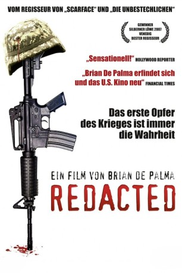

#3154 Redacted - Die Wahrheit stirbt zuerst
Alternativ: Redacted
 
 IMDB-Wertung: 6.1 / 10
IMDB-Wertung: 6.1 / 10  Metascore: 52
Metascore: 52 
Irak, 2006. Der Alltag im stark umkämpften Samarra gleicht in nichts dem Bild, das die Kriegsberichterstatter vor Ort in den Medien entwerfen. Die Einheimischen leiden nicht nur unter den gewaltbereiten Aufständischen, sondern auch unter der aggressiven Brutalität der amerikanischen Besatzer. Als eine Gruppe von US-Soldaten in ein Wohnhaus eindringt, ein 14-jähriges Mädchen vergewaltigt und die ganze Familie tötet, eskaliert die Situation.
Jahr: 2007
Dauer: 90 Minuten
FSK: 18
Land: USA Studio: Magnolia PicturesTonspuren:
Untertitel: Deutsch,
Auflösung: 720p (1280x720) Größe: 4474 MB
Genre: Drama, Krieg, Krimi
Regisseur:  Brian De Palma
Brian De Palma
Drehbuch: Brian De Palma
Soundtrack:
Darsteller:
- Izzy Diaz als Angel Salazar
 Ty Jones als Master Sergeant Sweet
Ty Jones als Master Sergeant Sweet- Mike Figueroa als Sergeant Jim Vasquez
- Kel O'Neill als Gabe Blix / Criminal Investigation Agent #2
 Daniel Stewart Sherman als B.B. Rush
Daniel Stewart Sherman als B.B. Rush- Patrick Carroll als Reno Flake
 Happy Anderson als Battalion Commander / Prosecutor
Happy Anderson als Battalion Commander / Prosecutor- Bridget Barkan als Judy McCoy
 Ohad Knoller als Army Psychiatrist
Ohad Knoller als Army Psychiatrist- Paul O'Brien als McCoy's Father
 Don McKellar als Criminal Investigator
Don McKellar als Criminal Investigator- Abigail Savage als Tattooed Kid
- Rob Devaney als Lawyer McCoy
- Anas Wellman als Soldier
- Yanal Kassay als Soldier
- Dhiaa Khalil als Soldier
- Qazi Freihat als Hadi
- Adel Odai als Interpreter
- Helen Zamel als Date Girl
- Hiyam Abdel Karim als Pregnant Woman
- Issam Shamary als Pregnant Woman's Brother
- Shukraya Maran als Young Screaming Woman
- Sahar Alloul als Arab News Reporter
- Mazen Zoubi als Company Commander
- Zahra Zubaidi als Farah
- Sabrine Munther als Farah's Little Sister
- Shatha Haddad als Embedded Journalist
- Karima Attayey als Farah's Mother
- Suhail Abdel Hussein als Farah's Father
- Hameed Sahi als Farah's Grandfather
- Paul Hijazin als English Newscaster
- Jafar Zoubi als ATV Anchorman
- Nick Seeley als Criminal Investigation Agent #1
- Andrew Cullen als Buddy #1
- Francois Caillaud als Buddy #2
- Lara Atalla als Buddy #3
- Julie Thiery als 'Barrage' Narrator
Datei: X:\FSK18-2000-2009\Redacted - Die Wahrheit stirbt zuerst (2007, FSK18, 1280x720).mkv seit 06.02.2016
Festplatte: FSK18
 Es gibt insgesamt 106 Filme in der Gruppe 'FSK18-2000-2009'
Es gibt insgesamt 106 Filme in der Gruppe 'FSK18-2000-2009'